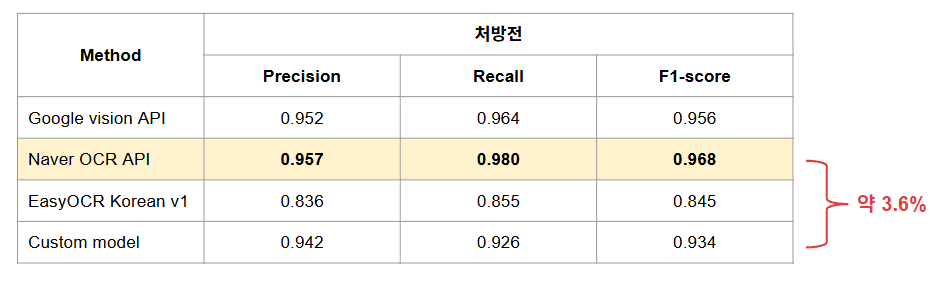
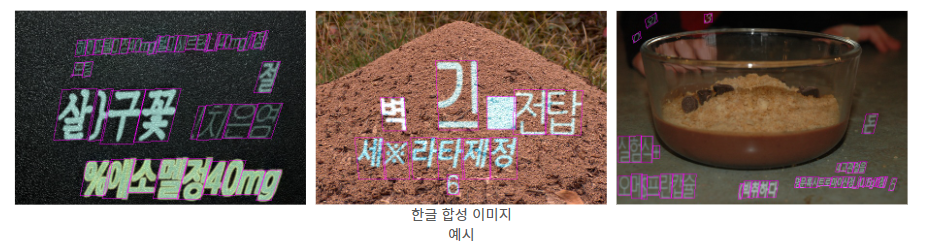

PROJECT TITLE
처방전 문자 검출 모델 성능 고도화
TECHNOLOGIES
Python · PyTorch · OCR · Text Detection · CRAFT
ROLE
Team Leader / Detection Model Development
PROJECT
CRAFT 논문과 비공식 구현체를 분석해 학습 Pipeline을 재현하고, 한글 합성 데이터와 실제 처방전 데이터를 활용해 Detection 모델을 처방전 Domain에 맞게 고도화했습니다.
Overview & Problem


기존 Recognition 모델 고도화 이후에도 OCR 성능 차이가 남아 있었고, Error Analysis 결과 Detection 단계의 오류가 전체 OCR 성능을 제한하는 주요 병목임을 확인했습니다.
Recognition 모델을 고도화한 결과 처방전 OCR Recognition 성능은 F1 0.934까지 향상되었지만, Naver OCR API의 F1 0.968과 성능 차이가 남아 있었습니다.
정성 분석 결과 작은 글자·숫자가 검출되지 않거나, 인접한 글자가 하나의 Bounding Box로 묶이고, 일부 글자가 세로 방향으로 잘못 검출되는 문제가 반복적으로 발생했습니다.
Problem
Analyze
Text Detection 모델을 검토한 결과 CRAFT를 개선 모델로 선정했지만, Naver Clova는 학습 코드를 공개하지 않았고 공개된 비공식 구현체 역시 논문에서 보고한 성능을 재현하지 못했습니다.
| Model | Precision | Recall | F1-score |
|---|---|---|---|
| Official CRAFT | 0.898 | 0.843 | 0.869 |
| Unofficial CRAFT | 0.803 | 0.705 | 0.751 |
논문, Official Repository, 비공식 구현체를 비교한 결과 성능 차이를 유발하는 핵심 구현 요소를 다음과 같이 좁혔습니다.
- Vertical Text 판별 기준
- Random Crop 방식
- Watershed 기반 Character Pseudo Label 생성 방식
Action
1. CRAFT Training Pipeline 재현

공식 Training Code가 존재하지 않아 CRAFT 논문과 공개 Repository를 기반으로 비공식 구현체를 분석하고 학습 Pipeline을 직접 재구성했습니다.
- Vertical Text: 세로 단어 판별 조건을 더 엄격하게 재정의
- Random Crop: 작은 글자가 과도하게 축소되거나 불필요한 Padding이 생기는 문제 수정
- Watershed: 원본 이미지가 아닌 Region Score에 적용해 Character 분리 성능 개선
Unofficial CRAFT F1-score: 0.751 → 0.852
Precision은 약 12%, Recall은 약 14% 향상되었고, Official CRAFT의 F1 0.869에 근접한 수준까지 성능을 재현했습니다.
2. Stage 1 — Backbone Architecture 개선

CRAFT Stage 1의 Backbone으로 사용하던 VGG16을 ResNet50으로 변경해 Feature Representation을 강화했습니다.
Detection F1: 0.816 → 0.841
Recognition F1: 0.876 → 0.901
3. Stage 1 — Korean Synthetic Dataset 구축

처방전에서 사용되는 한글·숫자·영어·기호를 충분히 학습할 수 있도록 한글 Synthetic Image 약 14만 장을 생성했습니다.
- Font: 굴림, 바탕, 맑은 고딕, 나눔 고딕
- 기존 Recognition 모델에서 사용한 약·의료 관련 Vocabulary 활용
- 한글·숫자·영어·기호를 포함한 Synthetic Image 생성
ResNet50 + Korean Synthetic Dataset
Detection F1: 0.929 · Recognition F1: 0.931
4. Stage 2 — Prescription-specific Dataset 구축 및 Fine-tuning

Weakly-Supervised Learning 단계에 실제 처방전 Domain을 반영하기 위해 처방전 이미지 130장을 직접 Annotation해 학습 Dataset을 구축했습니다.
- Word-level Bounding Box Annotation
- 단어 내부에 공백이 큰 경우 Character 단위 Annotation
- 필수 인식 대상이 아닌 영역은
dnc (do-not-care)로 Labeling
실제 처방전 Dataset으로 Fine-tuning하여 작은 글자 미검출, 인접 문자 병합, 잘못된 세로 검출 등 기존 Error Case를 개선했습니다.
Result

| Method | Detection F1 | Recognition F1 |
|---|---|---|
| Google Vision API | 0.818 | 0.956 |
| Naver OCR API | 0.957 | 0.968 |
| EasyOCR Korean v1 | 0.914 | 0.845 |
| Custom;Net — Detection 개선 전 | 0.926 | 0.934 |
| Custom;Net — Detection 개선 후 | 0.967 | 0.970 |
- 공식 Training Code가 없는 CRAFT를 논문 분석을 통해 직접 재현
- ResNet50 Backbone과 Korean Synthetic Dataset 14만 장, 실제 처방전 130장 Annotation을 활용해 Domain-specific Detection 성능 개선
- 최종적으로 Naver OCR API보다 높은 Detection / Recognition F1-score 달성
- 재현한 모델을 기반으로 EasyOCR Open-source Contribution으로 연결
More Detail
CRAFT 재현 과정과 처방전 Dataset 구축, 정량·정성 분석 결과는 Presentation에서 확인할 수 있습니다.
View Presentation ↗